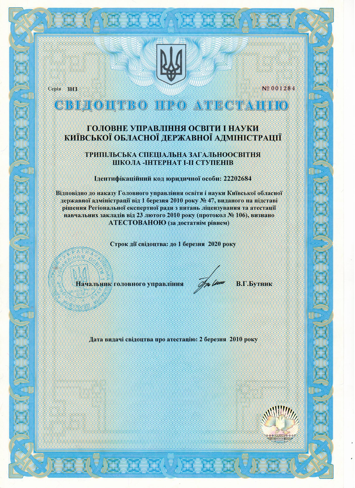
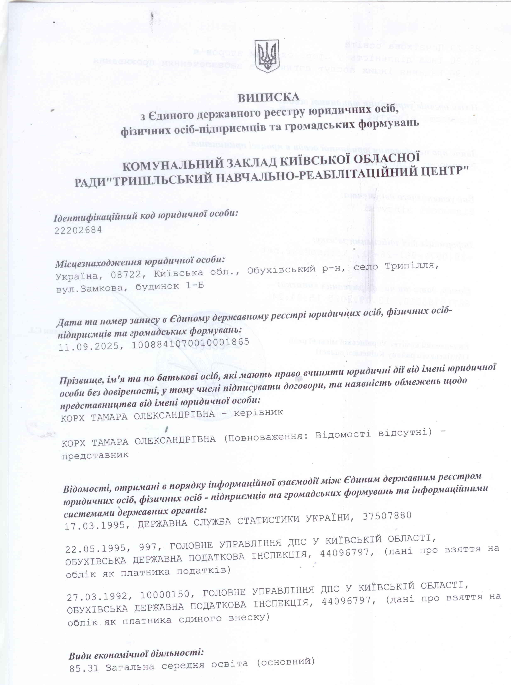
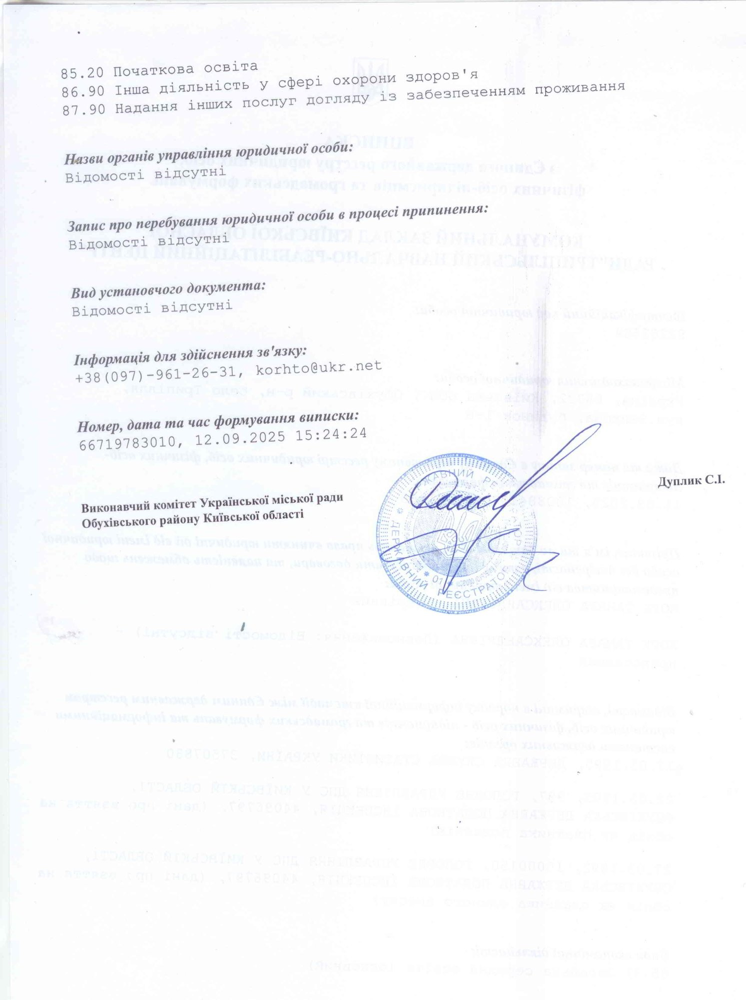

Статут
ЗАТВЕРДЖЕНО
Рішення Київської обласної ради
від 29 травня 2025 року №1365-32-VIII
СТАТУТ
КОМУНАЛЬНОГО ЗАКЛАДУ КИЇВСЬКОЇ ОБЛАСНОЇ РАДИ
«ТРИПІЛЬСЬКИЙ НАВЧАЛЬНО-РЕАБІЛІТАЦІЙНИЙ ЦЕНТР»
(нова редакція)
Ідентифікаційний код 22202684
м.Київ
2025
І. Загальні положення
1.1. Комунальний заклад Київської обласної ради «Трипільський навчально-реабілітаційний центр» (далі – Центр) є закладом загальної середньої освіти, що забезпечує відповідно до Державного стандарту загальної середньої освіти здобуття початкової освіти та базової загальної середньої освіти.
Центр, заснований на спільній власності територіальних громад сіл, селищ, міст Київської області.
1.2. Організаційно-правова форма Центру: комунальний заклад.
Центр є юридичною особою, що забезпечує потреби громадян у здобутті початкової та базової середньої освіти та має печатку і штамп встановленого зразка, ідентифікаційний код юридичної особи, затверджені бланки Центру, самостійно веде бухгалтерський облік та баланс, має рахунки в органах Державної казначейської служби України. Може від свого імені набувати майнових і особистих немайнових прав, нести обов’язки, бути позивачем і відповідачем у судах.
1.3. Юридична адреса Центру: 08722, Київська область, Обухівський район, Українська територіальна громада, село Трипілля, вулиця Замкова, будинок №1-Б.
1.4. Найменування Центру українською та англійською мовами:
повне – Комунальний заклад Київської обласної ради «Трипільський навчально-реабілітаційний центр»; Communal institution of the Kyiv regional council «Trypillia training and rehabilitation center»;
1.5. Засновником Центру, власником та органом управління майном є територіальні громади сіл, селищ, міст Київської області в особі Київської обласної ради (далі – Засновник).
1.6. Органом управління Центру є Київська обласна державна адміністрація (далі – Орган управління).
1.7. Центр є підпорядкованим, підзвітним та підконтрольним Засновнику, а також Органу управління в межах делегованих йому повноважень.
1.8. Центр у своїй діяльності керується Конституцією України, Законами України «Про освіту», «Про повну загальну середню освіту», «Про реабілітацію осіб з інвалідністю в Україні», «Про охорону дитинства», постановою Кабінету Міністрів України від 06 березня 2019 року № 221 «Про затвердження Положення про спеціальну школу та Положення про навчально-реабілітаційний центр», іншими законодавчими актами Верховної Ради України, указами і розпорядженнями Президента України, актами Кабінету Міністрів України, наказами Міністерства освіти і науки України, рішеннями Засновника та Органу управління, прийнятими у межах їх повноважень, а також цим Статутом.
1.9. Центр має право:
1) визначати зміст освіти з урахуванням державних стандартів та освітніх програм, застосовувати сучасні освітні технології реалізації змісту навчання на засадах його диференціації та індивідуалізації, а також самостійно розробляти та запроваджувати власні програми освітньої та інноваційної діяльності;
2) в установленому порядку визначати форми, методи і засоби організації освітнього процесу, розробляти і впроваджувати експериментальні та індивідуальні навчальні плани, визначати варіативну частину навчального плану, брати участь у роботі міжнародних організацій та здійснювати міжнародне співробітництво;
3) спільно із закладами вищої освіти, науково-дослідними інститутами та центрами проводити науково-дослідну, експериментальну, пошукову роботу, що не суперечить законодавству України;
4) отримувати майно, кошти і матеріальні цінності від державних органів, органів місцевого самоврядування, підприємств, установ, організацій, благодійних фондів, юридичних та фізичних осіб України або інших держав, у тому числі як благодійну допомогу відповідно до законодавства;
5) розвивати власну навчально-матеріальну та соціальну базу, створювати структурні підрозділи, здійснювати капітальне будівництво і реконструкцію на основі договорів;
6) надавати додаткові освітні та інші послуги, передбачені чинним законодавством України, та розпоряджатися власними надходженнями від надання таких послуг, у встановленому законодавством порядку;
7) бути учасником цивільно-правових відносин, набувати майнові і немайнові права відповідно до законодавства, на основі договорів (угод) співпрацювати з організаціями, підприємствами, установами для проведення різних видів робіт, а також об'єднувати на підставі спеціальних угод свою діяльність з діяльністю інших підприємств як в Україні, так і за її межами;
8) провадити фінансово-господарську та іншу діяльність відповідно до законодавства та цього Статуту;
9) представляти і захищати свої законні інтереси та законні інтереси своїх членів чи інших осіб у будь-яких органах державної влади, в тому числі судах, правоохоронних органах, у органах місцевого самоврядування, в установах та організаціях усіх форм власності та підпорядкування;
10) проводити для педагогічних працівників закладів освіти, інклюзивно-ресурсних центрів, батьків (інших законних представників) семінари, тренінги, стажування, заходи з підвищення професійної майстерності тощо;
11) створювати можливості для проходження практики здобувачами фахової передвищої та вищої освіти відповідних спеціальностей;
12) забезпечувати навчання для осіб з особливими освітніми потребами, які не мають складних порушень розвитку, шляхом утворення окремих класів.
13) здійснювати інші права та займатися іншою діяльністю, що викликані практичними потребами Центру, обумовлені цим Статутом і не заборонені чинним законодавством України.
1.10. Центр зобов’язаний:
1) реалізовувати положення нормативно-правових актів України, що регулюють діяльність Центру;
2) здійснювати освітню діяльність на підставі ліцензії, отриманої у встановленому законодавством порядку;
3) забезпечувати здобуття освіти учнями (вихованцями) відповідно до державного стандарту дошкільної освіти (за наявності дошкільного підрозділу) та державних стандартів початкової та базової середньої освіти;
4) мати кількість класів та дошкільних груп (за наявності дошкільного підрозділу) для учнів (вихованців) із складними порушеннями розвитку не менше половини від загальної кількості класів та дошкільних груп;
5) мати реабілітаційне відділення, матеріально-технічна база якого відповідає особливостям контингенту учнів (вихованців) та напряму (профілю) діяльності Центру;
6) мати кабінети з обладнанням та засобами для надання психолого-педагогічних та корекційно-розвиткових послуг відповідно до особливостей контингенту учнів (вихованців) та напряму (профілю) діяльності Центру;
7) створювати групи подовженого дня для виконання освітньої програми Центру;
8) використовувати систему автоматизації роботи інклюзивно-ресурсних центрів відповідно до Положення про систему автоматизації роботи інклюзивно-ресурсних центрів, затвердженого наказом Міністерства освіти і науки України від 02 листопада 2020 року №1353;
9) забезпечувати єдність навчання і виховання та видачу учням (вихованцям) документів про освіту встановленого зразка;
10) охороняти життя і здоров’я учнів (вихованців), педагогічних та інших працівників Центру;
11) додержуватись фінансової дисципліни, створювати та зберігати власну науково-методичну і матеріально-технічну;
12) проходити плановий інституційний аудит у терміни та в порядку, визначеним спеціальним законодавством;
13) здійснювати інші повноваження, делеговані Засновником та Органом управління освітою.
1.11. Центр відноситься до закладів загальної середньої освіти та провадить освітню діяльність відповідно до ліцензії.
Тривалість здобуття базової середньої освіти на кожному її рівні може бути змінено (подовжено або скорочено) залежно від форми здобуття освіти, результатів навчання та/або індивідуальної освітньої траєкторії учня (вихованця).
Освіта в Центрі здобувається за очною (денною) формою. Також освіта в Центрі може здобуватися за дистанційною, сімейною (домашньою) формами чи формою педагогічного патронажу.
1.12. У Центрі право на здобуття освіти гарантується незалежно від статі, раси, кольору шкіри, стану здоров’я, інвалідності, особливих освітніх потреб, громадянства, національності, політичних, релігійних чи інших переконань, місця проживання, мови спілкування, походження, сімейного, соціального та майнового стану, складних життєвих обставин, а також інших обставин та ознак.
1.13. Мовою освітнього процесу в Центрі є державна мова. Кожен, хто здобуває в Центрі освіту, вивчає у ньому державну мову відповідно до державних стандартів.
Кожному учневі (вихованцю) Центру гарантується право на здобуття базової середньої освіти державною мовою, що забезпечується шляхом організації викладання всіх навчальних предметів (інтегрованих курсів) державною мовою, крім випадків, визначених Законом України «Про повну загальну середню освіту».
1.14. Здобуття освіти та надання корекційно-розвиткових послуг у Центрі здійснюється безоплатно за рахунок державного та обласного бюджетів, коштів Засновника, інших джерел, не заборонених законодавством.
1.15. Учні (вихованці) із числа дітей з інвалідністю користуються пільгами, встановленими законодавством. Учні (вихованці) з числа дітей-сиріт та дітей та позбавлених батьківського піклування перебувають в пансіоні Центру на повному державному утриманні.
1.16. Статут Центру затверджується Засновником та реєструється у законодавчо визначеному порядку. Зміни до Статуту вносяться у порядку, встановленому для його реєстрації.
ІІ. Мета та предмет діяльності
2.1. Центр створено та діє для осіб з особливими освітніми потребами, зумовленими складними порушеннями розвитку (далі - діти із складними порушеннями), початкової та базової середньої освіти з урахуванням особливостей їх психофізичного розвитку та відповідно до освітньої програми центру та може мати у своєму складі пансіон та інші структурні підрозділи.
Директор Центру може ініціювати перед Засновником або Органом управління освітою питання щодо створення або ліквідації структурних підрозділів.
Структурні підрозділи діють відповідно до статуту Центру та на підставі положення про структурний підрозділ, затвердженого директором Центру.
2.2. Головною метою діяльності Центру є забезпечення, згідно з вимогами Державних стандартів та організаційно-правових засад діяльності Центру, реалізації права громадян на здобуття освіти на рівнях початкової та базової середньої освіти.
2.3. Головними завданнями Центру є:
1) забезпечення здобуття учнями (вихованцями) загальної середньої освіти на одному чи кількох її рівнях та/або дошкільної (за наявності дошкільного підрозділу) освіти з урахуванням їх індивідуальних потреб, можливостей, здібностей та інтересів відповідно до державних стандартів;
2) створення умов для здобуття освіти учнями (вихованцями) шляхом належного кадрового, матеріально-технічного забезпечення, забезпечення універсального дизайну та/або розумного пристосування, що враховує індивідуальні потреби та можливості учнів (вихованців);
3) забезпечення системного психолого-педагогічного супроводу учнів (вихованців) з урахуванням їх стану здоров’я, індивідуальних особливостей;
4) надання психолого-педагогічних та корекційно-розвиткових послуг (допомоги) учням (вихованцям) Центру та змінному контингенту;
5) забезпечення навчання учнів (вихованців) за допомогою найбільш прийнятних для них методів і способів спілкування в освітньому середовищі (просторі), що максимально сприяє засвоєнню знань і соціальному розвитку, використання в освітньому процесі допоміжних засобів для навчання, а також засобів альтернативної комунікації для дітей, які цього потребують, тощо;
6) викладання навчальних предметів (інтегрованих курсів) способами, що є найбільш прийнятними для учнів, у тому числі шляхом адаптації/модифікації змісту навчальних предметів (інтегрованих курсів), використання допоміжних засобів для навчання;
7) організація освітнього процесу, що ґрунтується на загальнолюдських цінностях, визначених Законами України «Про освіту», «Про повну загальну середню освіту», «Про дошкільну освіту» та «Про забезпечення рівних прав та можливостей жінок і чоловіків»;
8) сприяння набуттю ключових компетентностей учнями (вихованцями);
9) забезпечення здійснення реабілітаційних заходів для учнів (вихованців) Центру, а також для змінного контингенту;
10) формування компетентностей для подальшого самостійного життя та соціалізації учнів (вихованців);
11) сприяння всебічному розвитку учнів (вихованців);
12) надання консультацій батькам (іншим законним представникам) учнів (вихованців) з метою забезпечення їх активної участі в освітньому процесі та соціалізації учнів (вихованців) і змінного контингенту.
2.4. Основним видом діяльності є освітня, яка ґрунтується на засадах та принципах, визначених Законами України «Про освіту» та «Про повну загальну середню освіту», а саме: людиноцентризм; верховенство права; забезпечення якості освіти та якості освітньої діяльності; забезпечення рівного доступу до освіти без дискримінації за будь-якими ознаками, у тому числі за ознакою інвалідності; розвиток інклюзивного освітнього середовища; забезпечення універсального дизайну та розумного пристосування; науковий характер освіти; різноманітність освіти; цілісність і наступність системи освіти; прозорість і публічність прийняття та виконання управлінських рішень; відповідальність і підзвітність органів управління освітою та закладів освіти, інших суб’єктів освітньої діяльності перед суспільством; інституційне відокремлення функцій контролю (нагляду) та функцій забезпечення діяльності закладів освіти; інтеграція з ринком праці; нерозривний зв’язок із світовою та національною історією, культурою, національними традиціями; свобода у виборі видів, форм і темпу здобуття освіти, освітньої програми, закладу освіти, інших суб’єктів освітньої діяльності; академічна доброчесність; академічна свобода; фінансова, академічна, кадрова та організаційна автономія закладів освіти у межах, визначених законом; гуманізм; демократизм; єдність навчання, виховання та розвитку; виховання патріотизму, поваги до культурних цінностей Українського народу, його історико-культурного надбання і традицій; формування усвідомленої потреби в дотриманні Конституції та законів України, нетерпимості до їх порушення; формування поваги до прав і свобод людини, нетерпимості до приниження її честі та гідності, фізичного або психологічного насильства, а також до дискримінації за будь-якими ознаками; формування громадянської культури та культури демократії; формування культури здорового способу життя, екологічної культури і дбайливого ставлення до довкілля; невтручання політичних партій в освітній процес; невтручання релігійних організацій в освітній процес (крім випадків, визначених цим Законом); різнобічність та збалансованість інформації щодо політичних, світоглядних та релігійних питань; державно-громадське управління; державно-громадське партнерство; державно-приватне партнерство; сприяння навчанню впродовж життя; інтеграція у міжнародний освітній та науковий простір; нетерпимість до проявів корупції та хабарництва; доступність для кожного громадянина всіх форм і типів освітніх послуг, що надаються державою; рівні можливості для всіх.
Чинним законодавством України можуть встановлюватись також інші принципи та засади, що поширюються на освітню діяльність Центру.
2.5. Центр несе відповідальність перед особою, суспільством і державою за:
1) безпечні та комфортні умови освітньої діяльності;
2) дотримання державних стандартів початкової та базової середньої освіти;
3) дотримання договірних зобов’язань з іншими суб’єктами освітньої, виробничої, наукової діяльності, у тому числі зобов’язань за міжнародними угодами;
4) дотримання фінансової дисципліни та збереження матеріально-технічної бази;
5) прозорість та інформаційну відкритість Центру тощо.
6) реалізацію інших завдань освіти, визначених чинним законодавством України.
ІІІ. Порядок комплектування (зарахування, відрахування) та режим роботи
3.1. Центр є багатопрофільним для дітей з порушеннями інтелектуального розвитку у поєднанні з тяжкими порушеннями мовлення, а також дітей з розладами спектру аутизму, синдромом Дауна, іншими складними порушеннями.
3.2. Зарахування учнів (вихованців) до центру, їх відрахування чи переведення до іншого закладу освіти проводиться з урахуванням особливостей їх розвитку, стану здоров’я, освітніх потреб та Порядку зарахування осіб з особливими освітніми потребами до спеціальних закладів загальної середньої освіти, їх відрахування, переведення до іншого закладу освіти, затвердженого Наказом міністерства освіти і науки України від 1 серпня 2018р. №831.
3.3. Зарахування до Центру здійснюється відповідно
до наказу директора, що видається на підставі заяви про зарахування
одного з батьків дитини або її законних представників (далі - батьки) чи
повнолітньої особи, поданої особисто.
3.4. Особи, у яких відсутні навички самообслуговування та які відповідно до індивідуальної програми реабілітації особи (дитини) з інвалідністю потребують індивідуального догляду та супроводу, мають комплексні порушення розвитку зараховуються до Центру виключно на денну форму навчання та забезпечуються педагогічним патронажем та соціально-побутовим патронажем.
3.5. Обробка персональних даних, отриманих спеціальним закладом освіти, здійснюється відповідно до Закону України «Про захист персональних даних».
3.6. До 1 класу Центру зараховуються, як правило, діти не молодші ніж 6 років, які потребують постійної додаткової підтримки в освітньому процесі з метою забезпечення їх права на освіту.
3.7. Відповідно до особливостей розвитку та стану здоров’я особи з особливими освітніми потребами можуть розпочинати здобуття початкової освіти з іншого віку, а тривалість здобуття ними початкової та базової середньої освіти може бути подовжена з доповненням освітньої програми корекційно-розвитковим складником.
3.8. До Центру можуть зараховуватися особи з інших адміністративно-територіальних одиниць, у підпорядкуванні яких немає відповідного спеціального закладу освіти.
Директор Центру зараховує таку особу та за потреби узгоджує із засновником закладу організаційні питання щодо утримання особи з особливими освітніми потребами в Центр.
3.9. Для переведення учня із Центру до іншого закладу освіти учень чи один з його батьків (для учнів, які не досягли повноліття) має звернутися до обраного ним закладу освіти щодо можливості зарахування з відповідним письмовим зверненням (запитом) в довільній формі, у тому числі шляхом надсилання його сканованої копії електронною поштою.
Директор центру освіти упродовж 3 робочих днів з дати надходження такого звернення (запиту) має надати заявнику письмову відповідь (у тому числі шляхом надсилання її сканованої копії на електронну пошту заявника) про наявність чи відсутність вільних місць у певному класі та, відповідно, можливість чи неможливість зарахування учня до цього класу.
У письмовому підтвердженні можливості зарахування особи має бути вказаний кінцевий строк для подання заяви про переведення та подання особової справи учня.
3.10. До Центру особисто подаються:
- заява учня чи одного з його батьків (для учнів, які не досягли повноліття);
- письмове підтвердження або його сканована копія з іншого закладу освіти про можливість зарахування до нього відповідного учня.
3.11. Протягом 5 робочих днів з дня отримання відповідних документів директор Центру зобов’язаний видати наказ про відрахування учня для переведення до іншого закладу освіти та видати особову справу учня.
3.12. У разі покращення стану здоров’я дитини, досягнення успіхів у засвоєнні навчального матеріалу учні Центру переводяться до іншого типу закладів загальної середньої освіти.
3.13. Із Центру відраховуються учні, які:
- здобули базову загальну середню освіту та отримали відповідний документ про освіту;
- зараховані до іншого закладу освіти для здобуття повної загальної середньої освіти;
- переводяться до іншого закладу;
- вибули на постійне місце проживання за межі України.
Відрахування з таких підстав здійснюється шляхом видачі відповідного наказу керівником закладу освіти.
3.14. Відрахування із Центру учнів із числа дітей-сиріт та дітей, позбавлених батьківського піклування (крім тих, які здобули базову загальну середню освіту та отримали відповідний документ про освіту), здійснюється відповідно до чинного законодавства.
3.15. За учнем (вихованцем) зберігається місце в Центрі у разі його хвороби, карантину, санаторного лікування, на час відпустки батьків або осіб, які їх замінюють, а також у літній оздоровчий період.
3.16. Відділення Центру функціонують у єдиній системі. Відділеннями Центру є:
- дошкільне відділення, для дітей віком 5,6 (7) років;
- відділення початкової освіти (1-4 класи);
- відділення базової загальної середньої освіти (5-10 (11) класи);
- відділення реабілітації та корекційно-розвиткової роботи;
- пансіон з частковим або повним утриманням учнів (вихованців).
3.17. Діяльність відділення корекційно-розвиткової роботи Центру спрямована на реабілітацію основного та вторинного порушень та профілактику супутніх захворювань.
3.18. Утримання учнів (вихованців) в пансіоні Центру здійснюється за рахунок засновника (засновників) та інших джерел, не заборонених законодавством.
3.19. Мережа класів, їх наповнюваність та розподіл учнів (вихованців) одного року навчання між класами визначаються директором Центру та оформлюються наказом.
У Центрі можуть бути утворені класи-комплекти. Початкова школа може забезпечувати здобуття початкової освіти дітьми (незалежно від їх кількості) одного або різного віку, які можуть бути об’єднані в один або в різні класи.
3.20. Гранична наповнюваність 1-10 (11) класів становить шість осіб.
Клас відкривається за умови наявності чотирьох учнів (вихованців) денної форми здобуття освіти.
Допускається перевищення граничної наповнюваності класу на одну особу.
3.21. Поділ класів на групи для вивчення окремих предметів здійснюється згідно з нормативами, встановленими МОН.
3.22. Центр може надавати платні освітні та інші послуги у порядку, визначеному законодавством.
Центр може надавати послуги дітям з порушеннями розвитку, які навчаються в інклюзивних та спеціальних класах закладів загальної середньої освіти, та консультативні послуги батькам або іншим законним представникам дітей з порушеннями розвитку за їх заявою.
3.23. Контингент учнів Центру формується з дотриманням вимог ст. 90 Бюджетного кодексу України.
3.24. Зарахування до пансіону Центру дітей-сиріт та дітей, позбавлених батьківського піклування, здійснюється відповідно до Порядку провадження органами опіки та піклування діяльності, пов’язаної із захистом прав дитини, затвердженого постановами Кабінету Міністрів України від 24 вересня 2008 року №866 «Питання діяльності органів опіки та піклування, пов’язаної із захистом прав дитини» (зі змінами від 04 серпня 2021 року №843 «Деякі питання соціального захисту дітей, влаштованих на цілодобове перебування до закладів різних типів, форм власності та підпорядкування») та від 03 листопада 2021 року №1131 «Про затвердження Порядку проживання та утримання учнів у пансіонах закладів освіти».
Учні (вихованці) можуть проживати в пансіоні Центру (крім вихідних, святкових днів і канікул) у разі, коли перебування в дорозі в один бік перевищує одну годину або відсутнє пряме транспортне сполучення, або за протоколом реабілітації передбачено обмеження фізичного навантаження.
Діти-сироти та діти, позбавлені батьківського піклування, можуть проживати в пансіоні Центру також у вихідні, святкові дні та під час канікул, крім дітей, які мають опікунів, піклувальників, прийомних батьків, батьків-вихователів.
За заявою батьків або інших законних представників учня (вихованця) та за погодженням із службою у справах дітей за місцем проживання учня (вихованця) його може бути влаштовано до пансіону Центру на вихідні та святкові дні, крім канікул. Рішення про утворення чергових груп затверджується наказом директора відповідно до статуту Центру.
Рішення про влаштування учнів (вихованців) до пансіону Центру затверджується наказом директора.
Вихованці дошкільних груп, крім дітей старшого дошкільного віку, не влаштовуються до пансіону Центру.
3.25. Здобуття початкової та базової загальної середньої освіти та надання корекційно-розвиткових послуг у Центрі здійснюється безоплатно за рахунок державного бюджету, коштів засновника, інших джерел, не заборонених законодавством.
Учні (вихованці) з числа дітей з інвалідністю користуються пільгами, встановленими законодавством.
Учні (вихованці) з числа дітей-сиріт та дітей, позбавлених батьківського піклування, перебувають в пансіоні Центру на повному державному утриманні.
ІV. Організація освітнього процесу
4.1. Концепція освітньої діяльності Центру спрямована на реалізацію основних положень Конституції України, Законів України «Про освіту», «Про повну загальну середню освіту», «Про реабілітацію осіб з інвалідністю в Україні», «Про охорону дитинства», постанови Кабінету Міністрів України від 06 березня 2019 року № 221 «Про затвердження Положення про спеціальну школу та Положення про навчально-реабілітаційний центр» (в редакції постанови Кабінету Міністрів України від 03 листопада 2021 року №1132), інших законодавчих актів Верховної Ради України; указів і розпоряджень Президента України; актів Кабінету Міністрів України; наказів Міністерства освіти і науки України, Концепції Нової української школи; державних та регіональних програм розвитку освіти, інших нормативно-правових актів України з питань освіти, освітньої програми Центру задля виявлення та розвитку здібностей та обдарувань особистості, її індивідуальних здібностей, досягнення результатів навчання, прогресу в розвитку, зокрема формування і застосування відповідних компетентностей, визначених державними стандартами.
4.2. Освітній процес у Центрі спрямовується на розвиток особистості учня (вихованця) шляхом формування та застосування його компетентностей для подальшого самостійного життя, має корекційну, розвивальну, виховну та реабілітаційну спрямованість.
4.3. Освітній процес організовується у безпечному освітньому середовищі та здійснюється на принципах забезпечення рівних прав та можливостей жінок і чоловіків, запобігання та протидії насильству за ознакою статі з урахуванням вікових особливостей, фізичного, психічного та інтелектуального розвитку учнів (вихованців), їх особливих освітніх потреб.
4.4. Освітній процес для учнів у Центрі організовується за такими циклами відповідно до рівнів освіти:
1) перший цикл початкової освіти – адаптаційно-ігровий (перший і другий рік навчання);
2) другий цикл початкової освіти – основний (третій і четвертий рік навчання);
3) перший цикл базової середньої освіти – адаптаційний (п’ятий і шостий рік навчання);
4) другий цикл базової середньої освіти – базове предметне навчання (7-10(11) роки навчання).
Домашні завдання учням на першому циклі початкової освіти (1 і 2 класи) відсутні. Письмові домашні завдання на другому циклі початкової освіти (3 і 4 класи) не є обов’язковими для виконання учнями.
Домашні завдання у 5-10(11) класах можуть задаватися учням з урахуванням особливостей їх психофізичного розвитку. Зміст, обсяг і форма виконання домашніх завдань визначаються педагогічними працівниками.
4.5. Центр для забезпечення здобуття освіти розробляє та використовує освітню програму. За наявності дошкільного підрозділу освітня програма Центру повинна передбачати виконання державного стандарту дошкільної освіти.
Освітня програма Центру може бути розроблена на основі відповідної типової освітньої програми або освітніх програм, розроблених суб’єктами освітньої діяльності, науковими установами, фізичними чи юридичними особами і затверджених відповідно до законодавства.
Рішення про використання Центром освітньої програми, розробленої на основі типової освітньої програми або іншої освітньої програми, приймається педагогічною радою Центру.
Не можуть бути затверджені та використовуватися освітні програми, що не передбачають досягнення учнями результатів навчання, визначених державними стандартами.
4.6. Освітня програма Центру в обов’язковому порядку повинна містити корекційно-розвитковий та виховний складники, що враховують специфіку розвитку та потреби учнів.
4.7. На основі визначеного в освітній програмі Центру навчального плану педагогічна рада погоджує, а директор затверджує річний навчальний план (один або кілька), в якому конкретизується перелік навчальних предметів (інтегрованих курсів), обов’язкових для вивчення, вибіркових (за вибором) освітніх компонентів, зокрема навчальних предметів (інтегрованих курсів), та кількість навчальних годин на тиждень (та/або кількість годин на навчальний рік).
4.8. У Центрі повинно бути забезпечено викладання навчальних предметів (інтегрованих курсів) способами, що є найбільш прийнятними для учнів відповідного віку та інтелектуального розвитку, у тому числі шляхом адаптації/модифікації змісту навчальних предметів (інтегрованих курсів).
4.9. Навчання учнів (вихованців) із складними порушеннями повинно здійснюватися за допомогою найбільш прийнятних для них методів і способів спілкування в освітньому середовищі (просторі) та максимально сприяти засвоєнню знань і соціальному розвитку, формування компетентностей для подальшого самостійного життя.
Для учнів (вихованців) із розладами аутичного спектра використовуються засоби альтернативної комунікації та інші методи і способи, які забезпечують формування необхідних компетентностей для подальшого самостійного життя, розвитку комунікативних навичок.
4.10. Психологічне забезпечення освітнього процесу у Центрі здійснюється практичними психологами, соціально-педагогічний патронаж – соціальними педагогами.
4.11. У Центрі реалізується індивідуальна освітня траєкторія кожного учня (вихованця), що передбачає обов’язкове складення для кожного учня (вихованця) індивідуальної програми розвитку.
Індивідуальна програма розвитку для учнів складається на підставі висновку про комплексну психолого-педагогічну оцінку розвитку особи, наданого інклюзивно-ресурсним центром.
Індивідуальна програма розвитку для учнів повинна містити загальну інформацію про учня, інформацію про особливості та динаміку розвитку, особливості засвоєння освітньої програми (її окремих освітніх компонентів), потребу в індивідуальному навчальному плані, потребу в адаптації/модифікації змісту навчальних предметів (інтегрованих курсів), перелік психолого-педагогічних, корекційно-розвиткових та реабілітаційних послуг (допомоги), яких потребує учень.
У разі відвідування учнем реабілітаційної установи індивідуальна програма розвитку узгоджується з індивідуальним комплексним планом реабілітації в такій установі.
Індивідуальна програма розвитку для вихованців (за наявності дошкільного підрозділу) повинна містити: загальну інформацію про вихованця, інформацію про особливості та динаміку розвитку, особливості засвоєння освітньої програми, перелік психолого-педагогічних, корекційно-розвиткових та реабілітаційних послуг (допомоги), яких потребує вихованець.
Індивідуальна програма розвитку затверджується директором Центру, схвалюється педагогічною радою та підписується одним з батьків (іншим законним представником) учня (вихованця).
4.12. У разі коли учень не може досягти результатів навчання, визначених освітньою програмою Центру, за заявою одного з батьків (інших законних представників) учня Центром розробляється індивідуальний навчальний план, що визначає відмінну послідовність, форму і темп засвоєння освітніх компонентів освітньої програми.
Індивідуальний навчальний план розробляється педагогічними працівниками Центру у взаємодії з одним з батьків (іншим законним представником), схвалюється педагогічною радою Центру, затверджується директором та підписується одним з батьків (іншим законним представником) учня.
Індивідуальний навчальний план повинен забезпечувати засвоєння учнем відповідної освітньої програми Центру із збереженням корекційно-розвиткового складника та передбачати його участь у заходах Центру.
4.13. У Центрі можуть створюються групи подовженого дня з метою:
1) виконання освітньої програми Центру, що містить корекційно-розвитковий та виховний складники;
2) організації навчальної, виховної та пізнавальної діяльності учнів;
3) забезпечення психолого-педагогічних та корекційно-розвиткових послуг (допомоги);
4) забезпечення реабілітаційних послуг (допомоги);
5) надання кваліфікованої допомоги учням у підготовці до уроків і виконанні домашніх завдань;
6) формування в учнів ключових компетентностей, необхідних для подальшого самостійного життя;
7) забезпечення виконання індивідуальної програми розвитку та індивідуального навчального плану (за наявності);
8) організації дозвілля учнів.
4.14. Освітній процес у групах подовженого дня організовується з урахуванням освітньої програми Центру вихователями.
4.15. У Центрі повинні бути створені умови для організації денного відпочинку (сну) в групі подовженого дня для учнів першого класу та інших учнів, які цього потребують.
4.16. Режим роботи групи подовженого дня та організація освітнього процесу в ній повинні відповідати державним санітарним нормам. Режим роботи групи подовженого дня Центру повинен передбачати:
1) психолого-педагогічні та корекційно-розвиткові заняття;
2) реабілітаційні заходи;
3) виконання домашніх завдань (за наявності);
4) організацію прийому їжі тривалістю не менш як 30 хвилин;
5) прогулянки на відкритому повітрі;
6) проведення виховних та культурно-просвітницьких заходів;
7) проведення спортивно-оздоровчих занять;
8) денний відпочинок (сон) для учнів першого класу та учнів, які цього потребують.
4.17. Учні Центру можуть перебувати в групі подовженого дня не більше шести годин на день. На підставі заяви одного з батьків (іншого законного представника) уповноваженим ним особам дозволяється забирати учнів у будь-який час. Для таких учнів повинно бути забезпечено надання психолого-педагогічних та корекційно-розвиткових послуг (занять) і реабілітаційних послуг (заходів) з метою виконання індивідуальної програми розвитку та індивідуальної програми реабілітації.
4.18. Виховний процес є невід’ємною складовою освітнього процесу у Центрі і ґрунтується на принципах, визначених Законами України «Про освіту, «Про дошкільну освіту» та «Про повну загальну середню освіту».
У Центрі спільними зусиллями всіх учасників освітнього процесу створюється безпечне освітнє середовище, єдність навчання, виховання і розвитку учнів.
Для забезпечення всебічного розвитку учнів (вихованців) з урахуванням їх індивідуальних особливостей створюються відповідно до законодавства гуртки за інтересами, спортивні секції, залучаються заклади позашкільної освіти.
4.19. Виховання здійснюється педагогічними працівниками, у тому числі вихователями, відповідно до освітньої програми, режиму роботи Центру та спрямовується на всебічний розвиток учня (вихованця).
4.20. У Центрі здійснюється психолого-педагогічний супровід кожного учня (вихованця). З цією метою педагогічні та медичні працівники здійснюють спостереження за учнями (вихованцями). Результати спостережень обговорюються на засіданнях психолого-педагогічного консиліуму з метою уточнення змісту, форм і методів навчання, застосування індивідуального підходу до учня (вихованця).
4.21. Психолого-педагогічний консиліум є консультативно-дорадчим органом Центру, утворюється директором Центру та діє на підставі цього Статуту.
До складу психолого-педагогічного консиліуму входять директор Центру або його заступник (голова), який відповідає за організацію освітнього процесу, лікар, який входить до штату Центру за напрямом (профілем) діяльності Центру, вчителі, які здобули вищу освіту за спеціальностями «Спеціальна освіта» (для осіб, які здобували вищу освіту до набрання чинності постановою Кабінету Міністрів України від 29 квітня 2015 року №266 «Про затвердження переліку галузей знань і спеціальностей, за якими здійснюється підготовка здобувачів вищої освіти», за спеціальностями «Дефектологія», «Корекційна освіта (за нозологіями)»), інші педагогічні працівники Центру. До роботи психолого-педагогічного консиліуму можуть бути залучені інші фахівці. На першому засіданні психолого-педагогічного консиліуму обирається секретар консиліуму.
4.22. Основними функціями психолого-педагогічного консиліуму є:
1) забезпечення психолого-педагогічного супроводу учнів (вихованців) Центру;
2) поглиблене вивчення розвитку та успіхів учнів (вихованців) в опануванні освітньої програми, виконанні індивідуальної програми розвитку та індивідуальної програми реабілітації та складення індивідуальної програми розвитку та індивідуального навчального плану (за потреби);
3) проведення моніторингу динаміки розвитку учнів (вихованців) та результатів психолого-педагогічної, корекційно-розвиткової та реабілітаційної допомоги;
4) розроблення рекомендацій щодо особливостей організації освітнього процесу відповідно до особливостей психофізичного розвитку учнів (вихованців), а також визначення індивідуальної освітньої траєкторії;
5) надання консультаційної допомоги батькам (іншим законним представникам) учня (вихованця), педагогічним працівникам;
6) надання за запитом консультаційної допомоги з питань організації навчання дітей з особливими освітніми потребами, зокрема із складними порушеннями розвитку, які здобувають освіту в закладах дошкільної та загальної середньої освіти;
7) складення індивідуальної програми розвитку та надання рекомендацій змінному контингенту та консультацій їх батькам (іншим законним представникам).
4.23. Рішення психолого-педагогічного консиліуму фіксуються в протоколі засідання та ухвалюються більшістю голосів членів консиліуму. У разі рівного розподілу голосів вирішальним є голос голови психолого-педагогічного консиліуму. Засідання психолого-педагогічного консиліуму проводяться в разі потреби, але не рідше ніж двічі на рік. Для прийняття рішення щодо індивідуальної освітньої траєкторії учня залучаються його батьки (інші законні представники).
4.24. Оцінювання результатів навчання учнів Центру здійснюється згідно із загальними критеріями оцінювання з урахуванням індивідуального навчального плану (за наявності). За потреби здійснюється адаптація/модифікація проведення процедур оцінювання з урахуванням особливостей учнів.
4.25. Учні Центру звільнені від проходження державної підсумкової атестації. Облік оцінювання результатів навчання учнів протягом навчального року ведеться у класних журналах. Результати навчання за рік зазначаються в особових справах учнів.
4.26. Учні, які завершили здобуття певного рівня загальної середньої освіти, отримують відповідний документ про освіту в установленому законодавством порядку.
4.27. Відповідальність за організацію діяльності Центру, дотримання у закладі вимог санітарно-гігієнічних і санітарно-протиепідемічних правил та норм і організацію харчування учнів (вихованців) покладається на засновника та директора Центру.
Харчування учнів (вихованців) у Центрі здійснюється відповідно до норм харчування, встановлених Кабінетом Міністрів України.
4.28. Контроль за охороною здоров’я учнів (вихованців) Центру покладається на органи охорони здоров’я.
V. Учасники освітнього процесу
5.1. Учасниками навчально-виховного та реабілітаційного процесів є:
- учні (вихованці) Центру;
- керівники;
- педагогічні працівники;
- практичний психолог, соціальний педагог;
- медичний персонал;
- інші працівники (техперсонал, працівники їдальні, бухгалтерії тощо);
- батьки чи особи, що їх замінюють.
5.2. Статус учасників освітнього та корекційно-відновлювального процесів, їх права та обов’язки визначені Законами України «Про освіту», «Про повну загальну середню освіту», іншими актами законодавства України, цим Статутом, правилами внутрішнього трудового розпорядку.
5.3. Учні мають право на:
- вибір форм навчання, предметів варіативної частини навчального плану, позакласних занять;
- використання навчально-виробничої, корекційно-відновлювальної, матеріально-технічної, культурно-спортивної баз Центру;
- участь у громадському самоврядуванні Центру, виставках, конкурсах;
- участь у добровільних самодіяльних об’єднаннях, клубах, гуртках;
- захист від будь-яких форм експлуатації, психічного і фізичного насилля, що порушують права або принижують їх честь і гідність;
- дотримання прав і попередження дискримінації;
- безпечні і нешкідливі умови навчання, виховання та праці;
- соціальний захист.
5.4. Учні (вихованці) зобов’язані:
- дотримуватись вимог цього Статуту, правил внутрішнього розпорядку;
- систематично оволодівати знаннями, практичними навичками, підвищувати свій загальнокультурний рівень;
- бережливо ставитись до майна Центру;
- дбати про свою гігієну та належний зовнішній вигляд;
- виконувати рекомендації лікарів щодо проведення профілактично-лікувальних заходів;
- брати участь в самообслуговуючій та суспільно корисній праці з урахуванням віку, статі, фізичних можливостей, норм і вимог особистої гігієни та охорони здоров’я;
- вести здоровий спосіб життя.
5.5. Педагогічними працівниками Центру повинні бути особи з високими моральними якостями, які дотримуються етичних норм професійної діяльності, мають відповідний освітньо-кваліфікаційний рівень, педагогічну освіту та відповідну професійно-практичну підготовку для роботи з категорією дітей Центру, фізичний стан яких дозволяє виконувати покладені на них обов’язки.
5.6. Педагогічні працівники мають право:
- на захист професійної честі та гідності;
- самостійно обирати форми, методи, засоби навчальної роботи, безпечні для здоров’я дітей;
- вносити пропозиції керівництву Центру та департаменту освіти і науки Київської обласної державної адміністрації щодо поліпшення навчально-виховної та реабілітаційної роботи;
- обирати форми підвищення своєї кваліфікації, брати участь в науково-дослідній, експериментальній, пошуковій роботі відповідно до діючих нормативних документів;
- брати участь у роботі методичних комісій, нарад Центру та інших органів самоврядування;
- на соціальне і матеріальне забезпечення відповідно до чинного законодавства;
- об’єднуватись в професійні спілки та бути членами інших об’єднань громадян, діяльність яких не заборонена законодавством.
Відволікання педагогічних працівників від виконання професійних обов’язків не допускається (за винятком випадків, передбачених чинним законодавством).
5.7. Педагогічні працівники Центру зобов’язані:
- дотримуватись Статуту Центру, правил і режиму внутрішнього розпорядку;
- дотримуватись етичних норм професійної діяльності;
- забезпечувати належний рівень викладання навчальних дисциплін, відповідно до навчальних програм на рівні обов’язкових державних вимог;
- сприяти розвитку інтересів, нахилів та здібностей дітей, а також збереженню їх здоров’я, пропагувати здоровий спосіб життя;
- здійснювати диференційований підхід до учнів у навчанні, вихованні та розвитку пізнавальних здібностей, враховуючи при цьому індивідуальні психофізичні особливості;
- утверджувати особистим прикладом і настановами повагу до державної символіки, принципів загальнолюдської моралі;
- виховувати у вихованців повагу до батьків, жінки, старших за віком, народних традицій та звичаїв, духовних та культурних надбань народу України;
- готувати учнів до самостійного життя та праці в дусі взаєморозуміння, взаємоповаги, миру, злагоди між усіма народами;
- дотримуватись педагогічної етики, моралі, поважати гідність вихованця Центру;
- постійно підвищувати свій професійний рівень, педагогічну майстерність, загальну культуру;
- виконувати накази, розпорядження директора Центру, департаменту освіти і науки Київської обласної державної адміністрації;
- брати участь в педагогічних радах.
5.8. Обсяг навчального навантаження педагогічних працівників визначається у встановленому чинним законодавством порядку. Педагогічне навантаження педагогічних працівників обсягом менше тарифної ставки встановлюється тільки за їх згодою. Перерозподіл педагогічного навантаження протягом навчального року допускається лише у разі зміни кількості годин з основних предметів, що передбачається робочим навчальним планом або за письмовою згодою педагогічного працівника з дотриманням вимог чинного законодавства про працю.
5.9. Директор Центру призначає класних керівників, завідуючих кабінетами, навчальними майстернями, права і обов’язки яких визначаються в установленому порядку. Права та обов’язки педагогічних, медичних працівників, практичного психолога, соціального педагога та обслуговуючого персоналу визначаються у посадових інструкціях, які затверджуються директором Центру, визначаються Колективним договором за погодженням з профспілковим комітетом.
5.10. Педагогічні працівники підлягають атестації в порядку, встановленому чинним законодавством.
5.11. Призначення на посаду, звільнення з посади педагогічних працівників і інші трудові відносини регулюються чинним законодавством України про працю, Законом України «Про освіту», Законом України «Про повну загальну середню освіту» та іншими законодавчими актами.
5.12. Права і обов’язки інженерно-технічних працівників та допоміжного персоналу Центру регулюються трудовим законодавством, статутом та правилами внутрішнього розпорядку Центру.
5.13. Батьки чи особи, що їх замінюють, несуть однакову відповідальність з Центром за виховання, навчання і розвиток дітей. У разі невиконання батьками своїх обов’язків, передбачених чинним законодавством України, адміністрація Центру може порушувати клопотання про відповідальність таких осіб у тому числі і позбавлення їх батьківських прав.
5.14. Батьки чи особи, які їх замінюють, мають право:
- обирати і бути обраними до батьківського комітету Центру;
- звертатись до органів управління освітою, керівника Центру з питань навчання, виховання, утримання дітей, надання їм реабілітаційних послуг;
- брати участь у заходах, спрямованих на поліпшення організації освітнього процесу та зміцнення матеріально-технічної бази навчально-виховного та корекційно-відновлювального Центру;
- на захист законних інтересів своїх дітей в органах громадського самоврядування Центру та у відповідних державних, судових органах.
5.15. Батьки чи особи, які їх замінюють несуть відповідальність за здобуття учнями спеціальної загальної середньої освіти і зобов’язані:
- забезпечувати умови для здобуття дітьми спеціальної загальної середньої освіти;
- постійно дбати про їх фізичне здоров’я, психічний стан дітей;
- поважати гідність дитини, виховувати працелюбність, почуття доброти, милосердя, шанобливе ставлення до сім’ї, Батьківщини, рідної мови, повагу до національної історії, культури.
5.16. У освітньому та реабілітаційному процесах можуть брати участь представники підприємств, установ, науково-дослідних, кооперативних, громадських організацій, фондів, асоціацій у межах, визначених чинним законодавством України і цим Статутом.
5.17. Учасники освітнього та реабілітаційного процесів набувають прав і виконують обов’язки, що визначаються даним Статутом та договором із Центром.
5.18. Представники громадськості мають право:
- обирати і бути обраними до громадського самоврядування в Центрі;
- керувати учнівськими об'єднаннями за інтересами, гуртками, секціями, сприяти покращенню матеріально-технічної бази Центру;
- проводити спільні семінари, консультації з педагогічними та медичними працівниками;
- сприяти покращенню організації освітнього та лікувального процесів.
5.19. Представники громадськості зобов'язані:
- дотримуватись Статуту, виконувати рішення органів громадського самоврядування, накази та розпорядження адміністрації з питань організації освітнього та реабілітаційного процесів;
- погоджувати плани своєї діяльності у Центрі з дирекцією;
- забезпечувати дотримання прав та свобод учнів;
- дотримуватись етики поведінки та моралі;
- захищати учнів від різних форм фізичного та психічного насильства;
- пропагувати здоровий спосіб життя.
5.20. Органом учнівського самоврядування в Центрі є Козацька рада, яка діє на основі свого Статуту.
5.21. За успіхи у навчанні та праці для учасників освітнього та виробничого процесів в установленому чинним законодавством порядку здійснюються різні форми морального і матеріального заохочення.
VІ. Управління закладом
6.1. Управління Центром у межах повноважень, визначених законами та установчими документами цього Центру, здійснюють:
засновник,
орган управління;
директор Центру;
педагогічна рада Центру;
Рада Центру;
Загальні збори трудового колективу.
Органи громадського самоврядування та піклувальна рада мають право брати участь в управлінні Центром у порядку та межах, визначених Законами України (відкриється в новій вкладці) «Про освіту», «Про повну загальну середню освіту» та цим Статутом.
6.2. Права і обов’язки Засновника щодо управління Центром визначаються Законами України «Про освіту», «Про повну загальну середню освіту» та іншими законами України, цим Статутом.
6.3. До повноважень та компетенції Засновника належить:
приймання рішень про реорганізацію та ліквідацію Центру, призначення ліквідаційної комісії, комісії з припинення, затвердження ліквідаційного балансу, тощо;
призначення та укладання строкового трудового договору (контракту) з керівником Центру, обраним (призначеним) у порядку, встановленому законодавством, здійснення контролю за його виконанням;
припинення строкового трудового договору (контракту) з керівником Центру з підстав та у порядку, визначених законодавством, контрактом та установчими документами Центру;
затвердження положення про конкурс на посаду директора Центру та склад конкурсної комісії;
притягнення директора Центру до дисциплінарної відповідальності за порушення умов контракту, цього Статуту та/або чинного законодавства;
здійснення контролю за ефективним використанням майна, що є спільною власністю територіальних громад сіл, селищ, міст Київської області;
надання погоджень щодо передачі майна Центру в оренду у порядку, визначеному законодавством та рішеннями Засновника;
погодження цивільно-правових договорів, предметом яких є використання майна спільної власності територіальних громад сіл, селищ, міст Київської області;
затвердження Статуту про Центр, внесення змін до нього;
погодження структури та штатного розпису Центру;
надання погодження Органу управління щодо встановлення директору Центру надбавок, доплат, премій, матеріальної допомоги та інших видів заохочень, а також погодження його відпустки всіх видів;
здійснення інших повноваження та компетенції, передбачених законодавством та цим Статутом.
6.4. Засновник Центру приймає відповідні рішення в межах наділених повноважень та у порядку, визначеному законодавством.
6.5. Засновник не може делегувати директору, педагогічній чи піклувальній радам, органам громадського самоврядування Центру власні повноваження, визначені Законами України «Про освіту» та «Про повну загальну середню освіту».
6.6. Засновник закладу зобов’язаний:
забезпечити утримання та розвиток заснованого ним закладу освіти, його матеріально-технічної бази на рівні, достатньому для виконання вимог державних стандартів, ліцензійних умов провадження освітньої діяльності у сфері загальної середньої освіти, вимог трудового законодавства, оплати праці педагогічних та інших працівників, охорони праці, безпеки життєдіяльності, пожежної безпеки тощо;
у разі реорганізації чи ліквідації Центру забезпечити учням можливість продовжити навчання на відповідному рівні освіти.
6.7. Засновник здійснює інші повноваження відповідно до Конституції України (відкриється в новій вкладці), Законів України «Про місцеве самоврядування в Україні (відкриється в новій вкладці)», «Про освіту (відкриється в новій вкладці)», «Про повну загальну середню освіту», Санітарного регламенту для закладів загальної середньої освіти та інших нормативно-правових актів України.
6.8. Права і обов’язки Органу управління щодо управління Центром визначаються законами України «Про освіту (відкриється в новій вкладці)», «Про повну загальну середню освіту» та іншими законами України, цим Статутом.
6.9. До повноважень та компетенцій Органу управління належить:
затвердження документів, що застосовуються в процесі виконання бюджету (включаючи, але не обмежуючись, кошторис, штатний розпис Центру);
координація діяльності Центру, в межах повноважень, щодо реалізації завдань у сфері розвитку освіти;
здійснення контролю за цільовим та ефективним використанням бюджетних коштів;
реалізація державної політики у сфері освіти;
здійснення в Центрі моніторингу надання послуг, оцінки їх якості та оприлюднення відповідних результатів;
встановлення директору Центру (за попереднім погодженням із Засновником) надбавок, доплат, премій, матеріальної допомоги та інших видів заохочень, а також погодження його відпустки всіх видів;
інші повноваження та компетенції, передбачені законодавством та цим Статутом.
6.10. Орган управління приймає відповідні рішення в межах, наділених повноважень та у порядку, визначеному законодавством.
6.11. Керівництво Центром здійснює директор, повноваження якого визначаються Законами України «Про освіту», «Про повну загальну середню освіту», іншими законодавчими актами, Статутом Центру та контрактом.
6.12. Директором Центру може бути особа, яка є громадянином України, вільно володіє державною мовою, має вищу освіту ступеня не нижче магістра, за спеціальністю «Спеціальна освіта» («Корекційна освіта», «Дефектологія») або «Психологія» («Практична психологія») та/або стаж педагогічної роботи в спеціальному закладі освіти не менше п’яти років, організаторські здібності, стан фізичного і психічного здоров’я, що не перешкоджає виконанню професійних обов’язків, пройшла конкурсний відбір та визнана переможцем конкурсу відповідно до Закону України «Про повну загальну середню освіту».
6.13. Не може обіймати посаду директора особа, яка:
1) є недієздатною або цивільна дієздатність якої обмежена;
2) має судимість за вчинення злочину;
3) позбавлена права обіймати відповідну посаду;
4) за рішенням суду визнана винною у вчиненні корупційного правопорушення;
5) за рішенням суду визнана винною у вчиненні правопорушення, пов’язаного з корупцією;
6) підпадає під заборону, встановлену Законом України «Про очищення влади».
6.14. Директор Центру:
1) здійснює управління Центром, а у разі його відсутності – один із заступників, якщо відсутні заступники - посадова особа, визначена директором;
2) забезпечує раціональний добір і розстановку кадрів, створення належних умов для підвищення фахового рівня працівників, у встановленому порядку призначає на посаду та звільняє з посади працівників Центру;
3) забезпечує і контролює здійснення освітньої та корекційної діяльності Центром, дотримання виконавської та фінансової дисципліни;
4) розпоряджається в установленому порядку майном і коштами Центру, відкриває рахунки в органах Казначейства;
5) готує у межах визначеної граничної чисельності працівників та фонду оплати праці в установленому порядку структуру та штатний розпис Центру з відповідним погодженням із Засновником та затвердженням Органом управління, затверджує положення про структурні підрозділи та посадові інструкції працівників Центру;
6) забезпечує дотримання вимог та поліпшення охорони здоров’я, праці і фінансово-господарської діяльності, санітарно-гігієнічних, протипожежних норм і норм техніки безпеки та несе за це відповідальність;
7) видає у межах своїх повноважень накази;
8) встановлює у межах фонду оплати праці надбавки і розглядає питання щодо надання доплат, премій і матеріальної допомоги працівникам Центру, застосовує інші заходи заохочення та накладає дисциплінарні стягнення на працівників Центру відповідно до чинного законодавства України;
9) укладає договори про співробітництво, надання послуг, купівлі-продажу тощо, забезпечує придбання майна та інвентарю у межах передбачених коштів;
10) представляє Центр в органах державної влади, органах місцевого самоврядування, судах, правоохоронних органах, установах, організаціях, підприємствах при розгляді й вирішенні питань, що входять до його компетенції, або уповноважує на це відповідно до чинного законодавства інших працівників;
11) бере участь у заходах з питань, що віднесені до компетенції Центру;
12) утворює у Центрі конкурсні та атестаційні комісії, організовує підвищення кваліфікації працівників Центру;
13) відповідає за стан і збереження будівель та іншого майна, переданого у користування і володіння Центру;
14) несе відповідальність за формування та виконання кошторису, організацію податкового, бухгалтерського обліку, своєчасну виплату заробітної плати та забезпечення фіксування фактів здійснення всіх господарських операцій;
15) забезпечує умови праці працівникам Центру, необхідні для виконання роботи, передбачені законодавством про працю, колективним договором;
16) забезпечує дотримання та несе відповідальність за дотримання у діяльності Центру захисту персональних даних, доступу до публічної інформації, здійснення закупівель;
17) здійснює інші повноваження, передбачені законодавством.
6.15. Директор Центру зобов’язаний протягом першого року після призначення на посаду пройти курс підвищення кваліфікації з управлінської діяльності обсягом не менше 90 навчальних годин.
6.16. Директор Центру на контрактній основі призначається на посаду та звільняється з неї Засновником у порядку встановленому законодавством.
6.17. Підставами для дострокового звільнення директора Центру є:
1) порушення вимог законодавства України щодо мови освітнього процесу;
2) порушення вимог статей 30 і 31 Закону України «Про освіту»;
3) порушення прав учнів чи працівників, встановлене рішенням суду, яке набрало законної сили;
4) систематичне неналежне виконання інших обов’язків керівника Центру;
5) неусунення у визначений строк порушень вимог законодавства, виявлених під час інституційного аудиту чи позапланового заходу державного нагляду (контролю).
6.18. Заступники директора, педагогічні та інші працівники Центру призначаються на посади та звільняються з посад директором Центру.
6.19. Директор несе відповідальність за діяльність Центру та є представником Центру у відносинах з державними органами, органами місцевого самоврядування, юридичними та фізичними особами і діє без довіреності в межах повноважень, передбачених законом та Статутом Центру.
Директор Центру повинен виконувати обов’язки, покладені на нього чинним законодавством України, Засновником, Органом управління освітою, цим Статутом, колективним договором Центру та контрактом.
VІІ. Фінансово-господарська діяльність
7.1. Фінансово-господарська діяльність Центру здійснюється відповідно до Законів України «Про освіту», «Про повну загальну середню освіту», «Про місцеве самоврядування в Україні», Бюджетного кодексу України та інших нормативно-правових актів України.
7.2. Фінансування Центру здійснюється за рахунок коштів обласного бюджету та інших джерел не заборонених законодавством.
7.3. Фінансування здобуття повної загальної середньої освіти за рахунок коштів державного бюджету в Центрі здійснюється шляхом надання освітньої субвенції з державного бюджету місцевим бюджетам.
7.4. Фінансова автономія Центру в частині використання бюджетних коштів передбачає самостійне здійснення витрат у межах затверджених кошторисами обсягів, зокрема на:
- формування структури Центру та його штатного розпису;
- оплату праці працівників, встановлення доплат, надбавок, винагороди, виплату матеріальної допомоги та допомоги на оздоровлення, преміювання, інших видів стимулювання та відзначення працівників;
- оплату поточних ремонтних робіт приміщень і споруд Центру;
- оплату підвищення кваліфікації педагогічних та інших працівників;
- укладення відповідно до законодавства цивільно-правових угод (господарських договорів) для забезпечення діяльності Центру.
7.5. Іншими джерелами фінансування Центру можуть бути:
- доходи від надання платних освітніх та інших послуг;
- благодійна допомога відповідно до законодавства про благодійну діяльність та благодійні організації;
- гранти;
- інші джерела фінансування, не заборонені законодавством.
7.6. Отримані із зазначених джерел кошти використовуються Центром відповідно до затвердженого кошторису.
Одержання Центром власних надходжень не є підставою для зменшення обсягу його бюджетного фінансування.
Отримані Центром кошти повинні бути використані відповідно до його установчих документів, зокрема для організації та забезпечення його діяльності, та не можуть бути вилучені в дохід державного або місцевих бюджетів, крім випадків, передбачених законом.
7.7. Центр може надавати платні освітні та інші послуги, перелік яких затверджує Кабінет Міністрів України. Директор Центру визначає перелік платних освітніх та інших послуг, що надаються Центром, із зазначенням часу, місця, способу та порядку надання кожної з послуг, їх вартості та особи, відповідальної за їх надання.
Центр не може надавати (повністю чи частково) платні освітні послуги для досягнення їх здобувачами освіти результатів навчання (компетентностей), визначених Державними стандартами.
У Центрі під час освітнього процесу, що забезпечує досягнення результатів навчання, передбачених освітньою програмою Центру, не можуть надаватися платні послуги.
Здобувачі освіти та їхні батьки можуть отримувати в Центрі платні освітні та інші послуги виключно на добровільних засадах.
7.8. Порядок організації діловодства та бухгалтерського обліку у Центрі визначається чинним законодавством, нормативно-правовими актами Міністерства фінансів України, Міністерства освіти і науки України.
7.9. Центр є неприбутковою організацією, що утворена та зареєстрована у порядку, визначеному законом, що регулює діяльність неприбуткових організацій.
Доходи (прибутки) Центру використовуються виключно для фінансування видатків на утримання Центру, реалізації мети (цілей) та напрямів діяльності, визначених цим Статутом.
Центр здійснює господарську некомерційну діяльність, спрямовану на досягнення освітніх та інших результатів без мети одержання прибутку та є бюджетною установою.
Забороняється розподіл отриманих доходів (прибутків) Центру або їх частини серед засновників (учасників), працівників Центру (крім оплати їхньої праці, нарахування єдиного соціального внеску), членів органів управління та інших пов’язаних з ними осіб.
Не вважається розподілом доходів Центру, в розумінні пункту 7.9 цього Статуту, використання Центром власних доходів (прибутків) виключно для фінансування видатків на утримання Центру, реалізації мети (цілей, завдань) та напрямів діяльності, визначених цим Статутом.
7.10. Центр складає та подає в установленому чинним законодавством порядку фінансову, бюджетну та статистичну звітність.
7.11. Штатний розпис Центру розробляється на основі типових штатних нормативів навчально-реабілітаційних центрів, затверджених наказом Міністерства освіти і науки України від 03 липня 2020 року №890 «Про затвердження Типових штатних нормативів навчально-реабілітаційних центрів», та затверджується Органом управління Центром за погодженням Засновника.
VІІІ. Матеріально-технічна база
8.1. Правові засади володіння, користування і розпорядження майном Центру визначаються Законом України «Про освіту», «Про повну загальну середню освіту» та іншими актами законодавства.
8.2. Держава гарантує фінансову автономію Центру. Центр відповідно до чинного законодавства користується землею, іншими природними ресурсами і несе відповідальність за дотримання вимог та норм з їх охорони.
8.3. Матеріально-технічна база Центру включає будівлі, споруди, землю, комунікації, обладнання, транспортні засоби, інші матеріальні цінності, вартість яких відображено у балансі Центру.
8.4. Вилучення основних фондів, оборотних коштів та іншого майна Центру проводиться лише у випадках, передбачених чинним законодавством. Збитки, завдані Центру внаслідок порушення його майнових прав іншими юридичними та фізичними особами, відшкодовуються відповідно до чинного законодавства.
8.5. Об’єкти та майно Центру не підлягають приватизації чи використанню не за освітнім призначенням, крім надання в оренду з метою надання послуг, які не можуть бути забезпечені безпосередньо Центром, пов’язаних із забезпеченням освітнього процесу або обслуговуванням учасників освітнього процесу.
8.6. Майно Центру не може бути предметом застави, стягнення, джерелом погашення боргу, щодо такого майна не можуть вчинятися будь-які дії, наслідком яких може бути припинення спільної власності територіальної громади сіл, селищ, міст Київської області на таке майно. Центр не може бути приватизовано або в будь-який інший спосіб передано у приватну власність.
8.7. Центр має право набувати майнові та немайнові права, нести обов’язки, виступати стороною у судовому процесі, мати у власності кошти та інше майно відповідно до законодавства.
ІХ. Контроль за діяльністю Центру
9.1 Контроль за діяльністю закладу здійснюється з метою забезпечення реалізації єдиної державної політики у сфері загальної середньої освіти.
9.2. Державний контроль здійснюють уповноважені органи відповідно до чинного законодавства України.
Х. Міжнародне співробітництво Центру
10.1. Центр, його Засновник, органи державної влади та органи місцевого самоврядування здійснюють міжнародне співробітництво у сфері загальної середньої освіти відповідно до вимог Законів України «Про освіту» та «Про повну загальну середню освіту», мають право укладати угоди про співробітництво, встановлювати прямі зв’язки з органами управління освітою та закладами освіти інших держав, міжнародними організаціями, фондами у встановленому законодавством порядку.
10.2. Міжнародна академічна мобільність учнів та педагогічних працівників реалізується шляхом їх участі у програмах двостороннього та багатостороннього міжнародного обміну учнів та/або педагогічних працівників.
ХІ. Діяльність Центру на період воєнного стану, надзвичайної ситуації або надзвичайного стану (особливого періоду)
11.1. На період воєнного стану, надзвичайної ситуації або надзвичайного стану (особливого періоду) Центр може зараховувати дітей з особливими освітніми потребами незалежно від категорії (типу їх особливих освітніх потреб (труднощів)та дітей, які не мають особливих освітніх потреб, і додатково створювати для них класи, зокрема змішані та інклюзивні.
11.2. Гранична наповнюваність змішаних класів не може перевищувати восьми осіб. Для кожного учня, який здобуває освіту у змішаному класі, розробляється індивідуальна програма розвитку та індивідуальний навчальний план, що враховують індивідуальні особливості розвитку та категорію (тип) його особливих освітніх потреб (труднощів).
11.3. Організація освітнього процесу в інклюзивних класах здійснюється з Порядком організації інклюзивного навчання у закладах загальної середньої освіти, затвердженим постановою Кабінету Міністрів України від 15 вересня 2021 року №957. Для досягнення учнями, які не мають особливих освітніх потреб, що навчаються в інклюзивних класах, результатів навчання, визначених державними стандартами, директор Центру затверджує річний навчальний план без корекційно-розвиткового складника.
11.4. Учні змішаних та інклюзивних класів поселяються до пансіонату Центру.
Протягом одного року з дня припинення або скасування воєнного стану, надзвичайної ситуації або надзвичайного стану (особливого періоду) зазначені класи (крім інклюзивних) припиняють свою діяльність з подальшим забезпеченням продовження здобуття освіти учнів з особливими освітніми потребами у Центрі або переводяться до іншого закладу освіти.
Змішані та інклюзивні класи утворюються в межах існуючої штатної чисельності педагогічних працівників Центру шляхом внутрішнього перерозподілу педагогічного навантаження та в межах наявного фонду оплати праці.
11.5. На період воєнного стану, надзвичайної ситуації або надзвичайного стану (особливого періоду) гранична наповнюваність класів Центру може бути збільшена відповідно до рішення директора Центру з урахуванням санітарних норм розміщення в класі дітей.
11.6. На період воєнного стану, надзвичайної ситуації або надзвичайного стану (особливого періоду) для надання послуг (допомоги) змінному контингенту до Центру можуть надаватися копії документів, що посвідчують особу дитини, висновку інклюзивно-ресурсного центру про комплексну психолого-педагогічну оцінку розвитку особи або пред'являтися електронні відображення документів з використанням мобільного додатка Єдиного державного вебпорталу електронних послуг (Дія).
ХІІ. Прикінцеві положення та порядок припинення діяльності. Реорганізація або ліквідація Центру
12.1. Рішення про реорганізацію або ліквідацію Центру приймає засновник.
Реорганізація Центру відбувається шляхом злиття, приєднання, поділу, виділення.
Ліквідація проводиться ліквідаційною комісією, призначеною засновником.
12.2. Ліквідаційна комісія оцінює наявне майно Центру, виявляє його дебіторів і кредиторів і розраховується з ними, складає ліквідаційний баланс і представляє його засновнику.
12.3. У випадку реорганізації права та зобов’язання Центру переходять до правонаступників відповідно до чинного законодавства.
12.4. У разі припинення діяльності Центру (у результаті його ліквідації, злиття, поділу, приєднання або перетворення) активи Центру за рішенням Засновника передаються одній або кільком неприбутковим організаціям відповідного виду в межах комунальної власності району або зараховуються до доходу місцевого бюджету в частині грошових коштів.
12.5. Ліквідація проводиться ліквідаційною комісією, призначеною Засновником, а у випадках ліквідації за рішенням господарського суду – ліквідаційною комісією, призначеною цим органом. З часу призначення ліквідаційної комісії до неї переходять повноваження щодо управління Центром. Ліквідаційна комісія оцінює наявне майно Центру, виявляє його кредиторів і розраховується з ними, складає ліквідаційний баланс і представляє його Засновнику.
12.6. Центр є таким, що припинив свою діяльність, з дати внесення до Єдиного державного реєстру запису про державну реєстрацію припинення юридичної особи.
В.о. голови
Київської обласної ради Ярослав ДОБРЯНСЬКИЙ
Атестат 

Виписка 1 

Виписка 2 